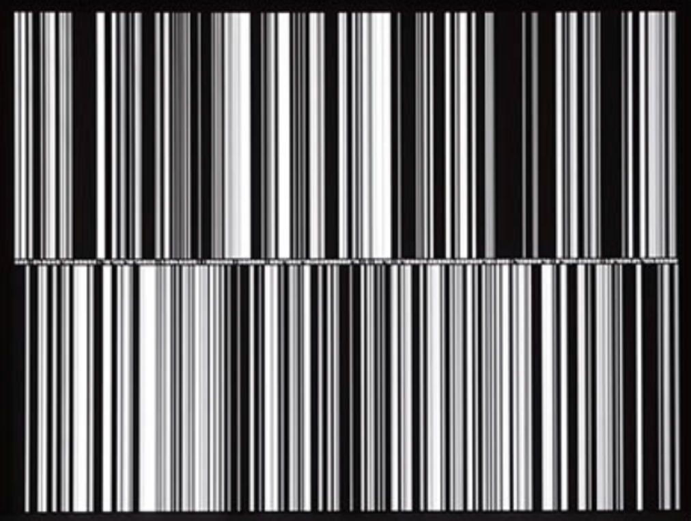
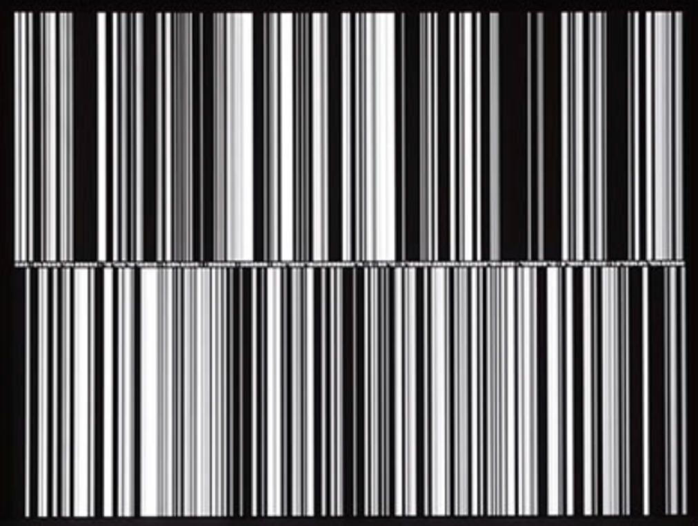

datamatics es un proyecto de arte que explora el potencial de percibir la multisustancia invisible de los datos que impregnan nuestro mundo. Se trata de una serie de experimentos de diversas formas (conciertos audiovisuales, instalaciones, publicaciones y lanzamientos de CD) que buscan materializar datos puros.

ryoji ikeda es un compositor y artista sonoro japonés, conocido por su enfoque innovador en la música electrónica y el arte sonoro. su obra ‘datamatics’ se centra en crear experiencias sensoriales profundas que exploran las minucias del sonido puro y su relación con la percepción humana. a través de métodos "microscópicos", utiliza tecnología informática para desarrollar instalaciones acústicas y audiovisuales que desafían las convenciones del arte. ikeda busca impactar emocionalmente al público, invitándolo a sumergirse en un paisaje sonoro que provoca sensaciones intensas.


 



datamatics es una obra multimedia que explora la relación entre los datos, el sonido y la visualización a través de experiencias audiovisuales inmersivas. ikeda, un artista japonés conocido por su enfoque en el arte digital y el minimalismo, utiliza datos como material creativo para producir patrones complejos, sonidos y visualizaciones que desafían la percepción del espectador.


toda la visualización y sonificación está basada en datos numéricos que han sido procesados y transformados en imágenes y sonidos. Los datos, originalmente abstractos e invisibles, se convierten en objetos artísticos que los espectadores pueden experimentar sensorialmente..
muchos de los procesos en "datamatics" están automatizados. La música y las imágenes se generan de forma continua a partir de algoritmos que procesan los datos en tiempo real, permitiendo que la obra funcione sin intervención manual constante. esta automatización otorga a los datos un flujo natural, transformándolos en representaciones audiovisuales dinámicas que evolucionan de manera independiente.
los sistemas automatizados en "datamatics" permiten que la obra se genere de forma continua y autónoma. los algoritmos transforman los datos en música e imágenes en tiempo real, garantizando que la creación funcione sin una intervención humana constante. esta independencia resalta la naturaleza digital del proyecto, caracterizada por la autonomía del proceso creativo y su evolución orgánica.


magdalena carbone, gracia cruz, monserrat fernández, martín guzmán, montserrat jofré, mariasara muñoz